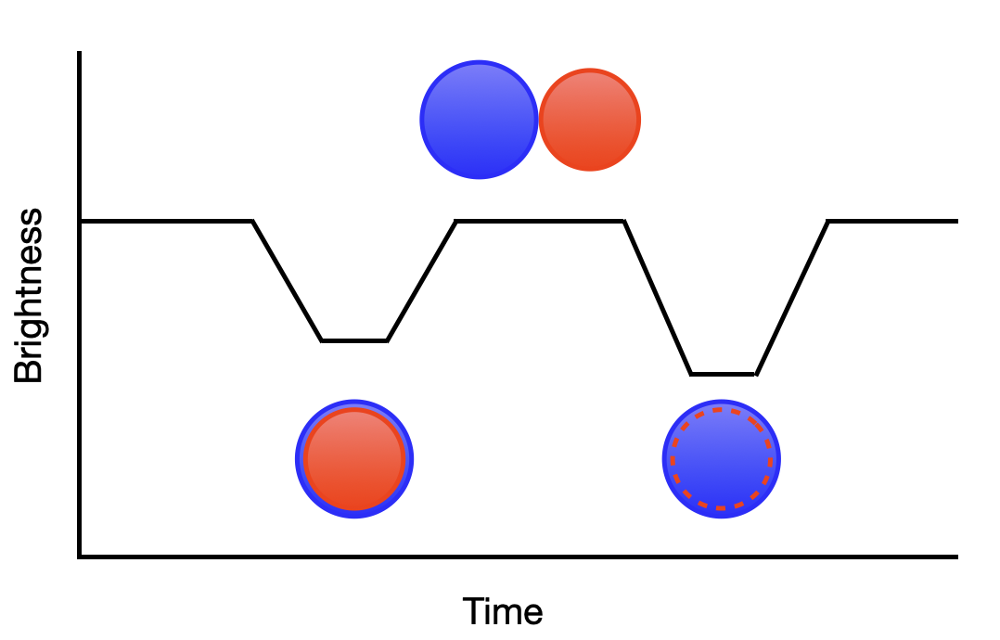
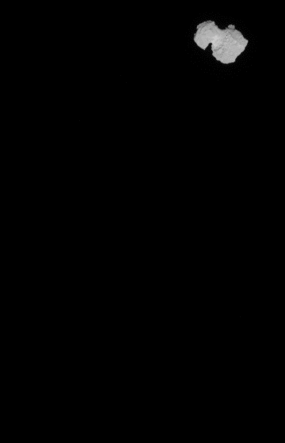

Finding the Rotation Curve of an Asteroid or Comet with TESScut and Lightkurve#
Learning Goals#
By the end of this tutorial, you will:
Understand what a TESS cutout of a moving target is
Use the
Tesscutfeature ofastroqueryto find a cutout of an asteroid or comet by namePlot light curves using lightkurve
Find the rotation period of a bright asteroid using lightkurve
Introduction#
NASA’s Transiting Exoplanet Survey Satellite, or TESS, was designed to detect planets orbiting bright stars. There are a number of different kinds of TESS data products available in the MAST archive, including:
FFI (full-frame image) time series contain the entire image captured by the camera taken at different times; these are large views of the sky.
Target Pixel Files (TPFs) are smaller subsets of full images focused on a single target. They are “postage-stamp” sized images separated by smaller time intervals than FFIs.
Light Curve Files are derived from the TPFs using Simple Aperture Photometry (SAP).
Though TESS was designed to study stars and the signatures of exoplanets orbiting them, inevitably other objects are observed within the FFIs. In particular, some asteroids and comets move through the observing sectors. Pál et al. 2020 noted:
“While its primary mission avoids the vicinity of the ecliptic plane by approximately six degrees, the scale height of the solar system debris disk is large enough to place various small body populations in the field of view.”
Because small bodies like asteroids and comets are moving targets, they don’t have fixed RA and Dec coordinates. The MAST archive’s TESScut tool has built-in features to find all of the sectors that include observations of a moving target, so long as the object’s name or ID can be understood by the JPL Horizon ephemerades interface. TESScut can then return a “cutout” of the full-frame images centered on the target as it moves through the observing sector. With this cutout, we can perform some simple aperture photometry on the target with lightkurve.
In Pál et al. 2020, the bright asteroid 354 Eleonora (often just called “Eleonora”) was found to have a rotation period of 4.27735 hours and had a mean magnitude of about 9.4 while observed by TESS.
In this tutorial, we will use TESScut to download a cutout of the TESS observations of Eleonora and use lightkurve to create a light curve of Eleonora and find its rotation period. This simple method will work because Eleonora is a relatively bright asteroid. Generally, for fainter solar system objects, more complex photometry methods will be needed. We’ll investigate why in one of the exercises.
Workflow#
The workflow for this notebook consists of:
Imports
Searching for TESS Observations using astroquery
Investigating TESSCut Data
File Structure and Auxillary Data
Plotting Individual Cutouts
Plotting the Cutout in Lightkurve
Loading a Moving Target
Create an Interactive Light Curve
Data Cleaning
Removing Blank Cadences
Removing Stellar Contamination
Plotting a Combined Light Curve
Finding the Rotation Period from Periodogram
Exercises
Imports#
astropy.io fitsfor acccessing FITS filesastropy.table Tablefor creating tidy tables of the datanumpyto handle array functionsmatplotlib.pyplotfor plotting dataastroquery.mast Tesscutwill create a cutout of the TESS data from the MAST Archivelightkurvecontains many useful tools for plotting and analyzing light curves
from astropy.io import fits
from astropy.table import Table
import astropy.units as u
import matplotlib.pyplot as plt
import numpy as np
from astroquery.mast import Tesscut
from astropy.visualization import time_support
import lightkurve as lk
%matplotlib inline
Searching for TESS Observations Using astroquery#
You can use the TESScut webpage to make a cutout of a TESS FFI time series; for a solar system object like an asteroid or comet, be sure to click on the “Moving Target” button at the top after the words “Create cutout based on.”
To create a scriptable process for using TESScut, we can instead use the built-in MAST functionality in astroquery to access TESScut. Let’s set our object name to “Eleonora.”
objname = 'Eleonora'
TESS observed distinct areas of the sky called Sectors. We can use Tesscut.get_sectors to see which (if any) sectors inlude observations of our object. Whenever using Tesscut with a moving target, we must always set moving_target=True (the default is False).
sector_table = Tesscut.get_sectors(objectname=objname, moving_target=True)
print(sector_table)
sectorName sector camera ccd
-------------- ------ ------ ---
tess-s0006-1-1 6 1 1
tess-s0023-1-1 23 1 1
Next we’ll use Tess.get_cutouts to, as the name implies, get the cutouts. Again, we must include the keyword moving_target=True.
We will also add the size keyword to choose how many pixels (in both width and height) we want our cutout to be. For this tutorial, we will choose a 10x10 cutout. This choice significantly affects the size of the .fits files and the time it will take to complete get_cutouts.
You can specify e.g. sector=6 when requesting a single cutout, but it’s not necessary. Without specifying the sector, we will receive results for all sectors available.
hdulist = Tesscut.get_cutouts(objectname=objname, moving_target=True, size=10)
print('Length of hdulist =',len(hdulist))
Length of hdulist = 2
Investigating the TESScut Data#
The result of Tesscut.get_cutouts is a list of .fits datasets; there is one element in the list per sector returned above. The contents of each element in hdulist are identical to the .fits files downloaded from the TESSCut website with the same selections (target name and size).
File Structure and Auxillary Data#
Let’s examine the second item in the list, because it will be the more interesting of the two, as we’ll soon see.
hdulist[1].info()
Filename: <class '_io.BytesIO'>
No. Name Ver Type Cards Dimensions Format
0 PRIMARY 1 PrimaryHDU 55 ()
1 PIXELS 1 BinTableHDU 151 444R x 16C [D, E, J, 100J, 100E, 100E, 100E, 100E, J, E, E, 38A, D, D, D, D]
2 APERTURE 1 ImageHDU 97 (2136, 2078) int32
The result that we get is described in the astrocut documentation on Path Focused Target Pixel Files. Extension 0 is the header with metadata. Astronomers not used to working with moving targets may note that the RA_OBJ and DEC_OBJ keywords are not there!
Extension 1 is the data we most want in the form of a binary table; we’ll look at that next.
But first, Extension 2, if present, is an image the size of the full-frame image (FFI) that the cutouts were drawn from. It’s an array: the value is 1 if the pixel was used and 0 if the pixel was not. By displaying this array as an image, we can see the trajectory of our moving target through the TESS sector.
plt.imshow(hdulist[1][2].data)
<matplotlib.image.AxesImage at 0x7fb9366046d0>
It appears that for this sector Eleonora is partially outside of the sector during the course of the observations.
Plotting Individual Cutouts#
Returning to Extension 1, this is a binary table with 358 rows and 16 columns. We can print out the names of each column, along with information about the units and size of arrays (when applicable).
hdulist[1][1].columns
ColDefs(
name = 'TIME'; format = 'D'; unit = 'BJD - 2457000, days'; disp = 'D14.7'
name = 'TIMECORR'; format = 'E'; unit = 'd'; disp = 'E14.7'
name = 'CADENCENO'; format = 'J'; disp = 'I10'
name = 'RAW_CNTS'; format = '100J'; unit = 'count'; null = -1; disp = 'I8'; dim = '(10,10)'
name = 'FLUX'; format = '100E'; unit = 'e-/s'; disp = 'E14.7'; dim = '(10,10)'
name = 'FLUX_ERR'; format = '100E'; unit = 'e-/s'; disp = 'E14.7'; dim = '(10,10)'
name = 'FLUX_BKG'; format = '100E'; unit = 'e-/s'; disp = 'E14.7'; dim = '(10,10)'
name = 'FLUX_BKG_ERR'; format = '100E'; unit = 'e-/s'; disp = 'E14.7'; dim = '(10,10)'
name = 'QUALITY'; format = 'J'; disp = 'B16.16'
name = 'POS_CORR1'; format = 'E'; unit = 'pixel'; disp = 'E14.7'
name = 'POS_CORR2'; format = 'E'; unit = 'pixel'; disp = 'E14.7'
name = 'FFI_FILE'; format = '38A'; unit = 'pixel'
name = 'TGT_X'; format = 'D'
name = 'TGT_Y'; format = 'D'
name = 'TGT_RA'; format = 'D'
name = 'TGT_DEC'; format = 'D'
)
To create our plot, we’ll want to use the data in the ‘FLUX’ column. Note that it has a shape of (10,10), which is the size of the cutout we requested.
# Create the subplot
fig,ax=plt.subplots(1,1)
# Use the flux data to create the image
imgplot=plt.imshow(hdulist[1][1].data[0]['FLUX'])
plt.colorbar(label='Flux (e-/s)')
# Add a title, units, and print RA/DEC
ax.set_title(f"{objname} {hdulist[1][1].data[0][0]:.1f} {hdulist[1][1].header['TUNIT1']}")
print('RA: ',hdulist[1][1].data[0][14])
print('Dec: ',hdulist[1][1].data[0][15])
RA: 213.39932017823293
Dec: 14.185542658093219
Whoops! This doesn’t look right. Recall that Eleonora is not always in the TESS field of view; we must be looking at data from before the asteroid enters the sector.
Let’s view a later image instead, say at row (or “cadence”) 100.
# Let's use a parameter to set the row to 100.
# How does the listed time change as a result?
i=100
# As before, create the plot, add titles, print RA/Dec
fig,ax=plt.subplots(1,1)
imgplot=plt.imshow(hdulist[1][1].data[i]['FLUX'])
plt.colorbar()
ax.set_title(f"{objname} {hdulist[1][1].data[i][0]:.1f} {hdulist[1][1].header['TUNIT1']}")
print('RA: ',hdulist[1][1].data[i][14])
print('Dec: ',hdulist[1][1].data[i][15])
RA: 213.0709791642988
Dec: 14.509725291732348
Now we see our target. Remember, we thought the asteroid would not be in the field of view the whole time; we now see that the target started out of the frame and moved in. Notice that roughly two days have elapsed and the target has moved to a different RA and Dec.
Plotting the Cutout in Lightkurve#
Though lightkurve has a search_tesscut function, it does not yet work for moving targets.
Loading a Moving Target#
We’ll need to save these .fits files locally to load them as Target Pixel Files into lightkurve. In a later exercise, you’ll confirm that the files we write are the same as those from the TESSCut tool in a web browser.
nsectors=len(hdulist)
for i in range(nsectors):
hdulist[i].writeto(f"{objname}_{i}.fits", overwrite=True)
Now, we’ll load each .fits file in as a TessTargetPixelFile object and collect all the sectors together into a TargetPixelFileCollection object; basically, a list of target pixel file (TPF) objects.
for i in range(nsectors):
tpf = lk.TessTargetPixelFile(f"{objname}_{i}.fits")
if i==0:
tpfc=lk.TargetPixelFileCollection([tpf])
else:
tpfc.append(tpf)
Create an Interactive Light Curve#
For one TPF at a time, we can use the interact feature of lightkurve to easily view a light curve (on the left) as a function of time. On the right, we’ll see the 10x10 image of Eleonora, overlaid with the aperture mask used for the aperture photometry that produced the light curve. You can view the Interactively inspecting Target Pixel Files tutorial to learn about more of the features of interact such as how to choose a custom aperture mask or change the screen stretch.
Let’s view the second sector observed by TESS. Try clicking and dragging the “Cadence Number” bar to see how Eleonora moves through the field of view. Can you tell that it is rotating every few hours?
tpfc[1].interact()
The light curve above confirms our suspicion that Eleonora was not viewable in the sector during the whole time of observation because it moved into the FFI during the observation. At the time of the writing of this tutorial, these cadences do not have a quality flag associated with them.
We can check that all of the cadences loaded in this observation have a quality flag of zero:
np.sum(tpfc[1].quality)
124928
Oh no! That’s larger than zero. Let’s look at the nonzero values and associated cadences.
# Create an empty flags list
flags = []
# Create a numbered list of flags, then go through them sequentially
for i, flag in enumerate(tpfc[1].quality):
# Add the number/flag pair if the flag is greater than zero
if flag > 0:
flags.append([i, flag])
print(flags)
[[0, 2048], [1, 2048], [2, 2048], [3, 2048], [4, 2048], [5, 2048], [6, 2048], [7, 2048], [8, 2048], [9, 2048], [10, 2048], [11, 2048], [12, 2048], [13, 2048], [14, 2048], [15, 2048], [16, 2048], [17, 2048], [18, 2048], [19, 2048], [20, 2048], [21, 2048], [22, 2048], [23, 2048], [24, 2048], [25, 2048], [26, 2048], [27, 2048], [28, 2048], [29, 2048], [30, 2048], [31, 2048], [32, 2048], [33, 2048], [34, 2048], [35, 2048], [36, 2048], [37, 2048], [38, 2048], [39, 2048], [40, 2048], [41, 2048], [42, 2048], [43, 2048], [44, 2048], [45, 2048], [46, 2048], [47, 2048], [48, 2048], [49, 2048], [50, 2048], [51, 2048], [52, 2048], [53, 2048], [54, 2048], [55, 2048], [56, 2048], [57, 2048], [58, 2048], [59, 2048], [60, 2048]]
Aha. A value of 2048 indicates stray light from the Earth/Moon, which might affect our measurements. Fortunately, Elenora doesn’t enter the field of view until cadence 56. Our list above shows that the last frame with this flag is 60. Even the four “bad” frames don’t seem to be affected by the stray light, so we should be okay to proceed.
Note: Although a for loop is more readable, we can accomplish the same thing we do in above cell with list comprehension. See the cell below for an example!
# Let's use list comprehension to do this in a single line
flags = [[i, flag] for i, flag in enumerate(tpfc[1].quality) if flag > 0]
print(flags)
[[0, 2048], [1, 2048], [2, 2048], [3, 2048], [4, 2048], [5, 2048], [6, 2048], [7, 2048], [8, 2048], [9, 2048], [10, 2048], [11, 2048], [12, 2048], [13, 2048], [14, 2048], [15, 2048], [16, 2048], [17, 2048], [18, 2048], [19, 2048], [20, 2048], [21, 2048], [22, 2048], [23, 2048], [24, 2048], [25, 2048], [26, 2048], [27, 2048], [28, 2048], [29, 2048], [30, 2048], [31, 2048], [32, 2048], [33, 2048], [34, 2048], [35, 2048], [36, 2048], [37, 2048], [38, 2048], [39, 2048], [40, 2048], [41, 2048], [42, 2048], [43, 2048], [44, 2048], [45, 2048], [46, 2048], [47, 2048], [48, 2048], [49, 2048], [50, 2048], [51, 2048], [52, 2048], [53, 2048], [54, 2048], [55, 2048], [56, 2048], [57, 2048], [58, 2048], [59, 2048], [60, 2048]]
Data Cleaning#
Removing Blank Cadences#
To remove the blank cadences, we will make the light curve for each TPF, collect them as a list in a LightCurveCollection object and then truncate the light curves.
for i in range(nsectors):
lc=tpfc[i].to_lightcurve()
if i==0:
lcc=lk.LightCurveCollection([lc])
else:
lcc.append(lc)
Based on the interact screen above, the second lightkurve should be truncated for all rows before cadence number 59. In an exercise below, you can confirm for yourself that we should truncate the first lightkurve after cadence number 293.
lcc[0]=lcc[0].truncate(after=293,column='cadenceno')
lcc[1]=lcc[1].truncate(before=59,column='cadenceno')
Removing Stellar Contamination#
The second light curve also shows two notable features around cadences 191-203 and 366-381. By examining the pixel data screen on the right, it’s clear that Eleonora passed by two stars at those times. The flux from both stars is added into the aperture photometry and resulting light curve, so we should also remove those cadences from our light curve. If we don’t, they may interfere with the periodogram.
In this case, we can use remove_outliers to remove fluxes greater than 2 standard deviations from the median. In a later exercise, you can confirm that this does not modify the rest of the periodic fluctuation of the light curve.
lcc[1]=lcc[1].remove_outliers(sigma_upper=2)
Plotting a Combined Light Curve#
Now we’re ready to view the two light curves on one plot.
lcc.plot()
<Axes: xlabel='Time - 2457000 [BTJD days]', ylabel='Flux [$\\mathrm{e^{-}\\,s^{-1}}$]'>
Admittedly, this view is not very helpful because of the large gap in time between observations of Eleonora. However, this time gap is important because it explains the difference in mean flux values between the two observations. Eleonora must have either been farther away from us during the first sector (and hence, dimmer) or possibly in a dimmer phase due to its position from us relative to the sun.
Still, having more data will help confirm the periodic nature of the flux variation, and hence, the period of the rotation of the asteroid. So, we should still stitch these together to create one light curve. In an exercse, you can investigate if this affects the rotation period.
lc_stitched=lcc.stitch()
lc_stitched.plot()
<Axes: xlabel='Time - 2457000 [BTJD days]', ylabel='Normalized Flux'>
Finding the Rotation Period from Periodogram#
Next, we’ll create the periodogram of this stitched light curve. More information can be found in the lightkurve documentation: What are Periodogram objects?
pg=lc_stitched.to_periodogram()
/opt/hostedtoolcache/Python/3.11.5/x64/lib/python3.11/site-packages/astropy/units/quantity.py:673: RuntimeWarning: invalid value encountered in sqrt
result = super().__array_ufunc__(function, method, *arrays, **kwargs)
pg.plot()
<Axes: xlabel='Frequency [$\\mathrm{\\frac{1}{d}}$]', ylabel='Power'>
There is clearly a frequency around 11 d-1 found with maximum power. That corresponds to a period of:
pg.period_at_max_power
Or, in hours:
pg.period_at_max_power.to(u.hr)
We can use this period to fold the light curve. This plots the flux values as a function of phase, or progress along each iteration of the period. In the folded light curve, the horizontal axis spans a value of 0.089 days. Rather than be shown all from left to right in time, the data points go back to the left side of the graph every 0.089 days; that’s why it’s “folded.”
lc_stitched.fold(period=pg.period_at_max_power).scatter()
<Axes: xlabel='Phase [JD]', ylabel='Normalized Flux'>
There appear to be two separate light curves: one with higher variation from the normalized flux, and one with lower variation. These correspond, respectively, to the first and second sectors, where the mean brightness of the asteroid was notably different. We can confirm this by examining each folded light curve separately.
lcc[0].fold(period=pg.period_at_max_power).scatter()
lcc[1].fold(period=pg.period_at_max_power).scatter()
<Axes: xlabel='Phase [JD]', ylabel='Flux [$\\mathrm{e^{-}\\,s^{-1}}$]'>
The folded light curve for the second sector looks a little suspicious because the same point in the phase (around 0.02) seems to show two different levels of flux. Pál et al. 2020, found a rotation period of 4.27735 hours; their period is almost a perfectly integer multiple of ours (times 2), which is known as a harmonic. Their period corresponds to second highest peak in our periodogram. We can view the difference this makes by looking at the folded light curve with our period times two:
lcc[0].fold(period=2*pg.period_at_max_power).scatter()
lcc[1].fold(period=2*pg.period_at_max_power).scatter()
<Axes: xlabel='Phase [JD]', ylabel='Flux [$\\mathrm{e^{-}\\,s^{-1}}$]'>

The accepted period (the second one we viewed) produced better folded light curves. It’s possible that our result was off by a factor of two due to a kind of symmetry in the asteroid. A more easily understandable example of this would be an eclipsing binary system; if the stars are a similar size, we will measure the period as being half of the true value. Dips of similar sizes might be counted as the same transit when they are in reality two distinct transits, which is likely what happened above. See the somewhat rudimentary diagram below for a visual explanation.
{kind=link}
It’s possible Eleonora has a double-lobe shape that causes a similar type of degeneracy to eclipsing binaries. As a matter of fact, the somewhat famous comet 67P/Churyumov-Gerasimenko exhibits this type of behavior. You can see an excellent example of this type of rotation in the images from ESA/Rosetta/NAVCAM (CC BY-SA IGO 3.0).
{kind=link}
Exercises#
Confirm that the first light curve in our hdulist should be truncated after cadence number 293.
# Place for code for Exercise 1
Confirm that using a
remove_outliercutoff ofsigma_upper=2did not affect the other cadences of the light curve for the second sector. At this point in the tutorial, the second sector’s original light curve is still saved under the variable namelc; plot a graph of its time vs. flux columns and then overplot our sigma-clipped time and flux columns. Hint: You’ll need to loadtime_support()first in order to use the time column in matplotlib.
# Place for code for Exercise 2
Determine if the rotation period returned by
lightkurveis different when using only one sector’s light curve at a time.
# Place for code for Exercise 3
Try recreating the procedure above to find the rotation period for a fainter (higher magnitude) small body from Pál et al. 2020 such as Hippodamia. What issues do you encounter in this case?
# Place for code for Exercise 5
Use astroquery’s Minor Planet Center Queries (MPC)
get_ephemerisfeature to investigate why the median flux for the first sector’s observations is lower than for the second sector’s observations. The times of each cadence are in the light curve’stimecolumn.
# Place for code for Exercise 6
Citations#
If you use astropy, lightkurve, or TESScut for published research, please cite the
authors. Follow these links for more information about citations:
Cite Brasseur et al. 2019 for TESScut
About this Notebook#
Author: Julia Kamenetzky
Keywords: TESS, asteroid, lighkurve
Last Updated: Apr 2023
Top of Page